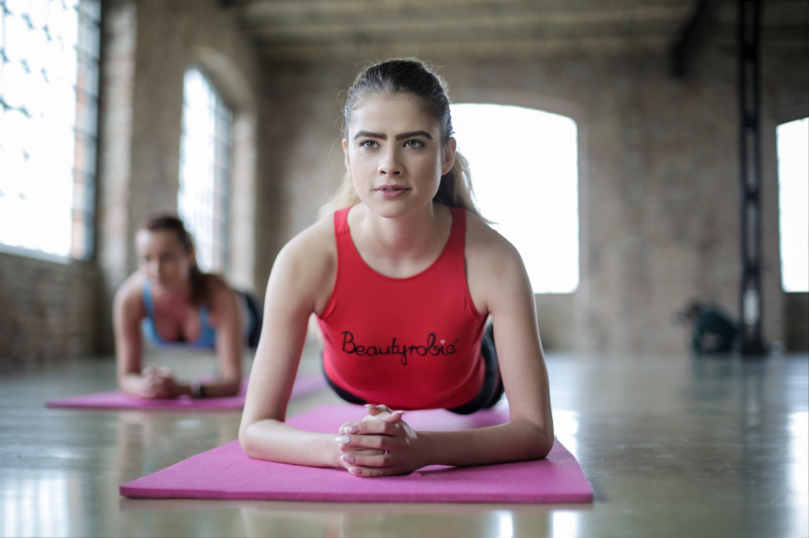
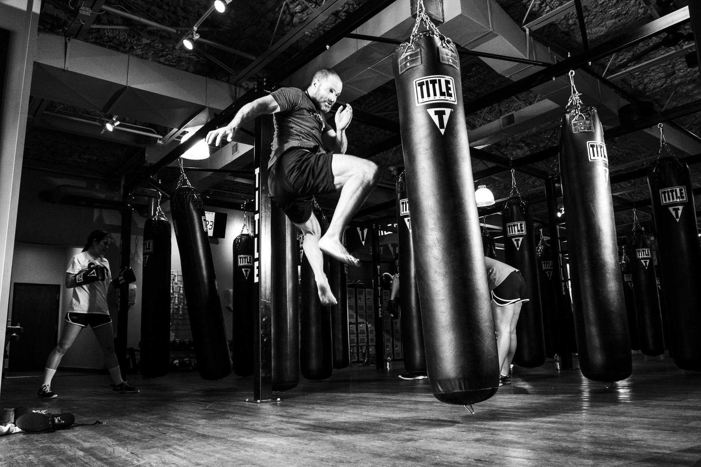
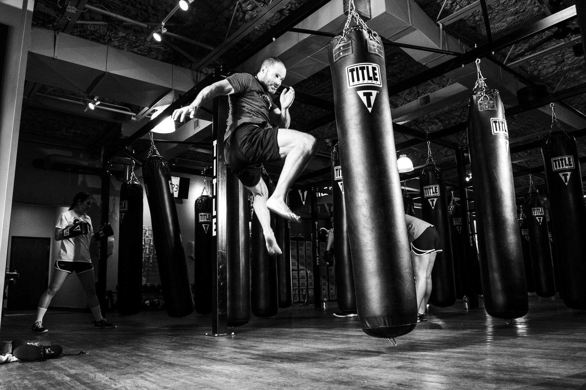
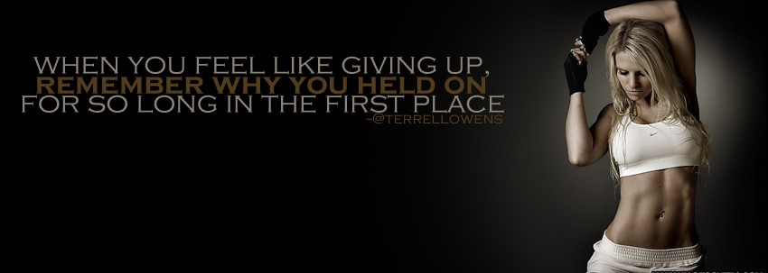

Facilities
● Yoga - 
If you've been practicing and teaching yoga for awhile, chances are good that you've been going to a studio. Most teacher trainings take place in a studio wholly dedicated to yoga, and advanced practitioners usually seek instruction among other like-minded yogis. And yet most Americans will get their first taste of yoga at the YMCA or their neighborhood gym. As the demand for yoga classes grows, so does the demand for teachers, and you may find yourself considering employment outside of a yoga studio “The relaxation techniques incorporated in yoga can lessen chronic pain, such as lower back pain, arthritis, headaches and carpal tunnel syndrome,” Yoga’s deep breathing and meditation practices help foster an inner shift from to-do lists, kids and spouse’s needs, financial concerns, and relationship struggles to something a little bit bigger than the issues you face. Yoga helps relieve stress and declutters the mind, helping you to become more focused.
● Cardio -

Cardio exercise is any exercise that raises your heart rate. Face it our bodies were made
to move. And we all know that to keep our muscles in shape we need move them. This movement
makes them stronger and stronger muscles make for a more efficient and healthy body.
Your heart is a muscle. Therefore working it makes it stronger. A stronger cardio-vascular
system means more capillaries delivering more oxygen to cells in your muscles.
This enables your cells to burn more fat during both exercise and inactivity.
Cardio exercise simply means that you're doing a rhythmic activity that raises your heart
rate into your target heart rate zone, the zone where you'll burn the most fat and
calories. To count as cardio exercise minutes, you must do the activity for at least
10 minutes.
Some of the many benefits of cardiovascular exercise include:
increased heart muscle strength.
improved cholesterol.
stress reduction.
lowered blood pressure.
mood and self-esteem boost.
weight control.
improved sleep.
● Boxing - 
● Exercise Machines -
● Equipments -
● Steam bath -
● Boxing - 
Boxing is approximately 80% anaerobic and 20% aerobic, which is why I included interval training
along with cardio and weight training. This workout combines strength, power, speed, agility
and quickness all into one to ensure you're a well-balanced fighter.
If you're not looking to become a boxer, you will need all of these things for self defense
and it can help you become a better athlete in your sport.
Before getting into the actual workout, let me go over the activities and exercises you will
utilize in your workouts.
Boxing is one of those fitness trends that’s almost always in the periphery – never completely
fading out of sight, but never taking the world by storm (à la Zumba). And while Billy Blanks
helped introduce the world to a more aerobics-friendly version of kickboxing when he developed
Tae Bo in the ’90s, cardio kickboxing’s harder, tougher cousin – boxing – remained mostly
out of sight.
● Exercise Machines -
The proper equipment will do nothing to tone your muscles without the correct weight. To determine
the proper weight, have a trainer or workout buddy spot you to determine the maximum weight
you can lift for a single repetition of a given exercise. Aim to lift at least 50 percent
of your maximum for 12 repetitions. If you can perform 12 repetitions with proper form,
you're probably not lifting with enough weight. You can add more weight and sets over time
as your fitness level improves.
Technology has changed exercise. Fitness equipment manufacturers are constantly innovating new products, and health clubs routinely upgrade to the latest, state-of-the-art equipment that:
is easier to use and gentler on your body,
can measure your heart rate on monitors built into cardiovascular machines,
can track your workout,
can keep track of how many calories you have burned,
allows you to watch television shows while working out.
● Equipments -
Exercise balls allow a wider range of free weight exercises to be performed. They are also known
as Swiss balls, stability balls, fitness balls, gym balls, sports balls, therapy balls or body
balls. They are sometimes confused with medicine balls.
Free weights include dumbbells, barbells, medicine balls, sandbells, and kettlebells. Unlike
weight machines, they do not constrain users to specific, fixed movements, and therefore
require more effort from the individual's stabilizer muscles. It is often argued that free weight
exercises are superior for precisely this reason. For example, they are recommended for golf
players, since golf is a unilateral exercise that can break body balances, requiring exercises
to keep the balance in muscles
● Steam bath -
Both steam rooms and saunas will make a person sweat due to the heat The sweating opens up the pores and helps
cleanse the outer skin.
Warm condensation will help rinse away dirt and dead skin and has been used in the treatment
of acne.
However, what a steam room also does that a sauna does not is help remove the toxins trapped
below the skin.
Services
• PERSONAL TRAINING -
Muscle your way towards confidence. Let us help you achieve results through our Private
Trainers’ resilient commitment and tireless effort. Our private trainers specialize in
teaching practices that will improve your overall health and lead you towards a more
sustainable life. They are with you step for step and rep for rep.
• GROUP FITNESS CLASSES -
Cardio. Crunches. Camaraderie. Experience our wide variety of innovative classes designed
to fit every schedule and need, we offer everything from strength, sculpting and
conditioning to martial arts, dance and a number of styles unique to THE GYM.
Our class schedules are designed to include both the latest fitness trends and methods
for getting results in a fun, energizing atmosphere.
• YOGA CLASSES -
Get cut from the same cloth. Explore your own inspiration through Yoga. Let our team of
dedicated instructors guide you to newfound discovery in strength, flexibility and
overall well-being. All mats, blocks and towels are provided, and equipment is cleaned
daily.
• WEIGHT MANAGEMENT -
Build the body you want. Our weight management system will provide you with a custom-designed
fitness and nutrition program based on the results of your individual metabolic profile.
Generate noticeable results. Our weight management team will assess your current fitness
level and nutritional habits and will help you achieve weight loss and sustain your
lifestyle transformation.
• NUTRITION COUNSELING -
An apple a day. Our Nutrition experts collaborate with you in your overall fitness and
health by working to build a customized nutritional program around your own personal
goals. We will help you to reach nutritional success for a healthier, happier you.
• SPA -
Get the Spa Treatment. Unwind, loosen-up and relax from the inside out in our Spa where
you will enjoy customized facials, massages, and reflexology in a soothing environment.
Escape to our aromatherapy steam room and sauna for an oasis of the senses
• FULL LOCKER ROOM SERVICES -
Relax. Refresh. Reset. Our full locker room services are available to provide ultimate
convenience and comfort. Amenities include fresh plush towels, hydrating shampoo and
conditioner, salon-style hairdryers and all the essentials needed to refresh after your
energizing workout.
• MEMBERSHIP -
THE GYM is no ordinary experience. It is a lifestyle program designed to achieve every
individual members respective health and fitness goals. Whether you are a beginner or an
enthusiast, every program, product and experience we offer begins and ends with creating
a premiere and comfortable atmosphere tailored for your individual and overall success
and safety.
Contact
About Us
● In 2007,our first Fitness club open in pune.
Today we have club in three branches, making us leader in the global fitness industry.
In india we have already opened 5 clubs in india and over 500 employees here, many of whom have growth with us
since we started in india.And moving ahead with opening more clubs in the new future.

We seek dynamic and passionate personnel to meet our rapid expansion needs.
The opportunities for growth are tremendous,with more clubs opening.
● Thanks for the Fitness First team for the goodwill gesture and for creating a fun workout environment. Loving all the equipments. Happy to have you open and enjoying the experience. ● "I love,love fitness.It's a block away from my office,so there's no excuse for not getting in a good workout! they are challenging in the past from some other Gym in Pune. Please do let me know about the timing and proper trainer This Gym has just what i need. I tend to work out in morning.When it's equipment.Additionally,i found the right trainer. Who help me to reach my fitness goal for the month."
● Thanks for the Fitness First team for the goodwill gesture and for creating a fun workout environment. Loving all the equipments. Happy to have you open and enjoying the experience. ● "I love,love fitness.It's a block away from my office,so there's no excuse for not getting in a good workout! they are challenging in the past from some other Gym in Pune. Please do let me know about the timing and proper trainer This Gym has just what i need. I tend to work out in morning.When it's equipment.Additionally,i found the right trainer. Who help me to reach my fitness goal for the month."